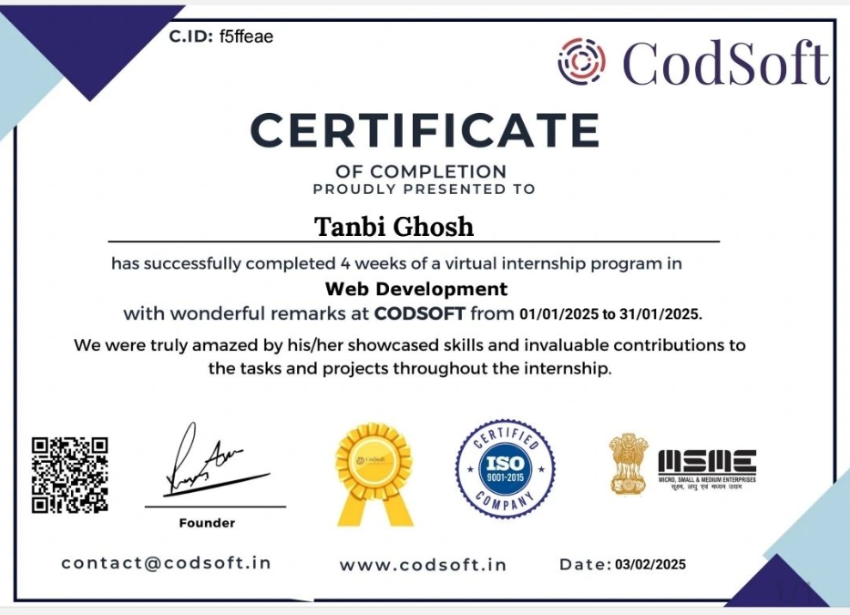

2026
Under Review
IndiToon MemeNet: Dual-Path Deep Framework for Person Recognition and Unethical Content Classification Using the Custom Cartoon Meme Dataset
Submitted to Neurocomputing.
Initializing...
MCA STUDENT · AI & COMPUTER VISION RESEARCH
Research · Technology · Accessible Innovation
Exploring intelligent systems.
Building technology with purpose.
I am an MCA student at Sister Nivedita University, Kolkata, with research interests in Artificial Intelligence, Computer Vision, Deep Learning, and accessible human–computer interaction.
An MCA student at Sister Nivedita University, Kolkata, with a BCA background (CGPA 8.84) and a growing research focus on Artificial Intelligence, Machine Learning, Deep Learning, and Computer Vision. I enjoy connecting technical problem-solving with thoughtful, accessible design.
My journey includes academic research, technical projects, editorial leadership, internships, and collaborative events. I value curiosity, clear communication, and building technology that can make a meaningful difference.
Currently exploring: I’m deeply interested in Artificial Intelligence, Machine Learning, and Computer Vision. I’m continuously learning modern AI technologies and enjoy building intelligent, accessibility-focused applications — expanding my knowledge through real-world projects, research, and hands-on experimentation.
Master of Computer Applications (MCA)
Sister Nivedita University, Kolkata
2026 – Present
Bachelor of Computer Applications (BCA)
Institute of Engineering and Management (IEM), Kolkata
Graduated 2026
Research & Academic Work
Submitted to Neurocomputing.
Accepted for presentation at ICMLDE-2026; selected for further publication processing in Procedia Computer Science.
Career Path
From editorial leadership to internships, research & student initiatives — every role has shaped how I build, write, and lead.
Download Resume
Gyan Ke Bytes — Ashram Campus Official News Magazine
Chief responsibilities include academic and institutional news writing, content editing and proofreading, editorial planning, team coordination, and publication design supervision.
Skills: Content Writing, Team Management

Campus Tank 2K25 | IEM Kolkata
An exhilarating journey as both an organizer and a student shark at IEM's high-energy entrepreneurship arena — watching sharp minds pitch startup ideas, strike deals, and embrace the entrepreneurial mindset in a competitive, high-stakes environment.

Euphoria GenX
Built and debugged full-stack features across the MongoDB, Express, React, and Node stack, working alongside the engineering team on real product tasks.

ApexPlanet Software Pvt. Ltd.
Developed and styled responsive web interfaces, gaining hands-on practice translating design specs into clean, functional front-end code.

CodSoft
Completed a series of front-end development tasks, strengthening core web fundamentals and independent problem-solving.

NewsTapOne
Wrote and edited content on assignment, building comfort with fast turnarounds and editorial accuracy.

SmartED
Represented SmartED on campus, driving student engagement and outreach for the platform's programs.
Primary AI Research Project — Ongoing, in collaboration with a National University — Computer vision and accessibility-oriented AI system that recognizes Indian Sign Language (ISL) gestures in real time and converts them into English text.
Developed an initial undergraduate prototype and continued the research through academic collaboration with an NIT professor and an IIT Kharagpur postdoctoral researcher. Exploring deep learning and computer vision methods for real-time gesture recognition and text generation. Focused on Artificial Intelligence, Deep Learning, Computer Vision, and accessible communication technologies, with hands-on work in image processing, gesture recognition, real-time inference, model development, debugging, and evaluation.
Computer Vision Research — Ongoing — Exploring pose estimation and gesture recognition to analyse dance movements and compare them with reference patterns.
The project investigates movement representation and visual pattern comparison using pose landmarks, with an emphasis on building an interpretable analysis workflow.
Undergraduate Graduation Project — A text conversion system designed to translate English text into Braille to develop a reading system for visually impaired individuals.
Developed as my undergraduate graduation project, converting English text into Braille. The work provided valuable, hands-on experience in Machine Learning, data processing, problem solving, and software development throughout the research and implementation process — an important academic learning milestone.
These projects were developed during my undergraduate journey to strengthen my frontend development, JavaScript, UI/UX design, and problem-solving skills through hands-on practice.
2026–Present — A responsive product showcase website with category filtering, interactive product views, and WhatsApp-based ordering.

Completed — A modern AI-powered news summary platform that delivers concise, easy-to-read summaries of the latest news from multiple categories.
Built to give users quick access to important information through a clean, responsive, and user-friendly interface, combining real-time news retrieval with AI-powered summarization.

A real-time weather application that provides current weather conditions, forecasts, and detailed meteorological data using API integration.

A fully functional offline chess game with a clean, interactive board, two-player local gameplay, move validation, and smooth piece animations — no internet required.

A feature-rich task management application with local storage, priority levels, filtering options, and an intuitive user interface for productivity.

My earlier portfolio website showcasing initial web development skills, creative design approach, and professional presentation of projects and achievements.
A portfolio website developed for a fellow student.
Computer Vision Research — Ongoing — Exploring pose estimation and gesture recognition to analyse dance movements and compare them with reference patterns.
The project investigates movement representation and visual pattern comparison using pose landmarks, with an emphasis on building an interpretable analysis workflow.

Designed and developed a modern personal academic portfolio for a Bachelor of Arts (A.I.H.C. & Archaeology) student, showcasing academic profile, research interests, heritage studies, and professional information with a clean responsive interface.

Ongoing Development — Collaborating with an entrepreneur to design and develop a modern business website. The project is currently under active development.
Focused on creating a modern, scalable, responsive, and user-friendly web experience — from information architecture through to a polished, production-ready frontend.
National Level Art Competition
Debarati Kalakendra
Institute Level Chess Championship
Regional Art Competition
Campus Tank 2K25 at IEM — An exhilarating journey as organizer and student shark.
West Bengal Government Police Recruitment Examination
HackArena Hackathon 2025, HACK{0}LUTION 2K25, Escape Room Coding Competition
Early Brahmi Workshop (CoE IKS), ESI Golden Jubilee Lecture Series, Kolkata Tech Workshop 2025 (IIT Kharagpur)
Grow Ever Steel (India) Pvt. Ltd. — March 7, 2025
Pragya Quiz — Participant (2024, 2025)
Writer & Painting Contributor (2024, 2026)
2023
Creative Writer
Open to opportunities, collaborations, and conversations.
Let’s build something
I’m always excited to collaborate on AI, Machine Learning, Computer Vision, Web Development, and Research projects.